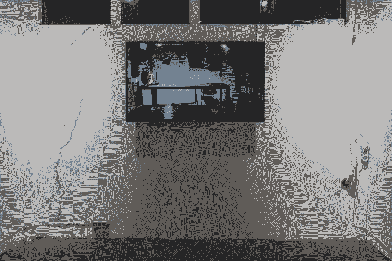
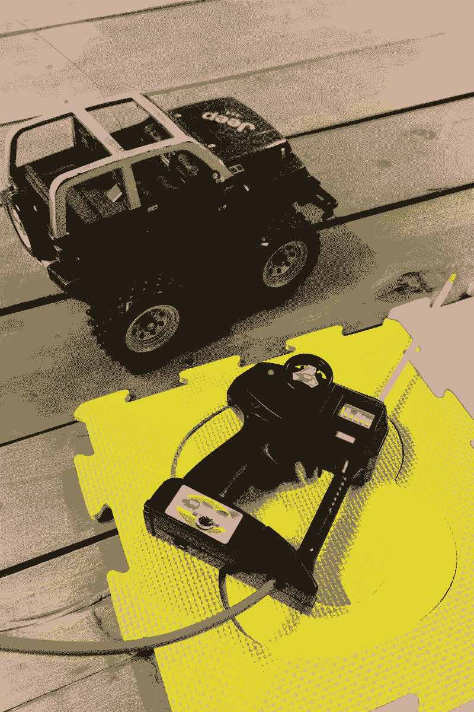
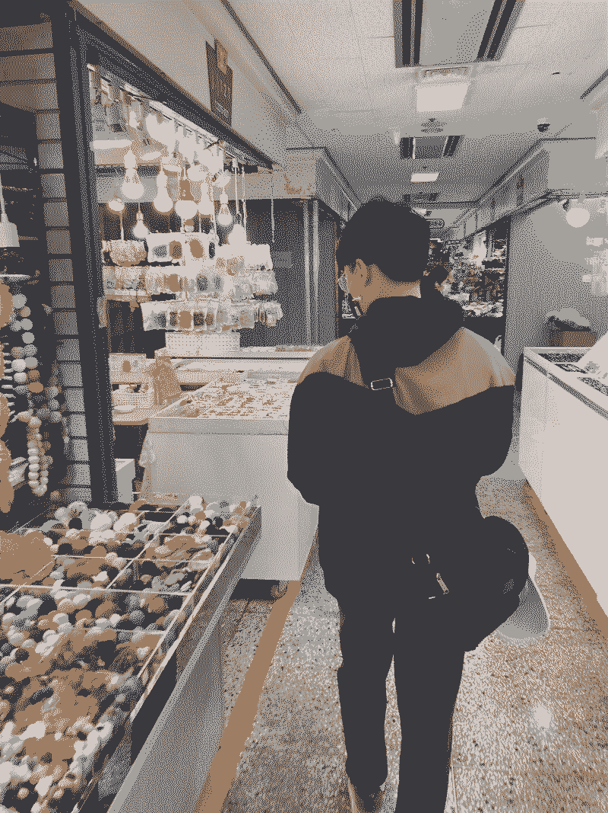
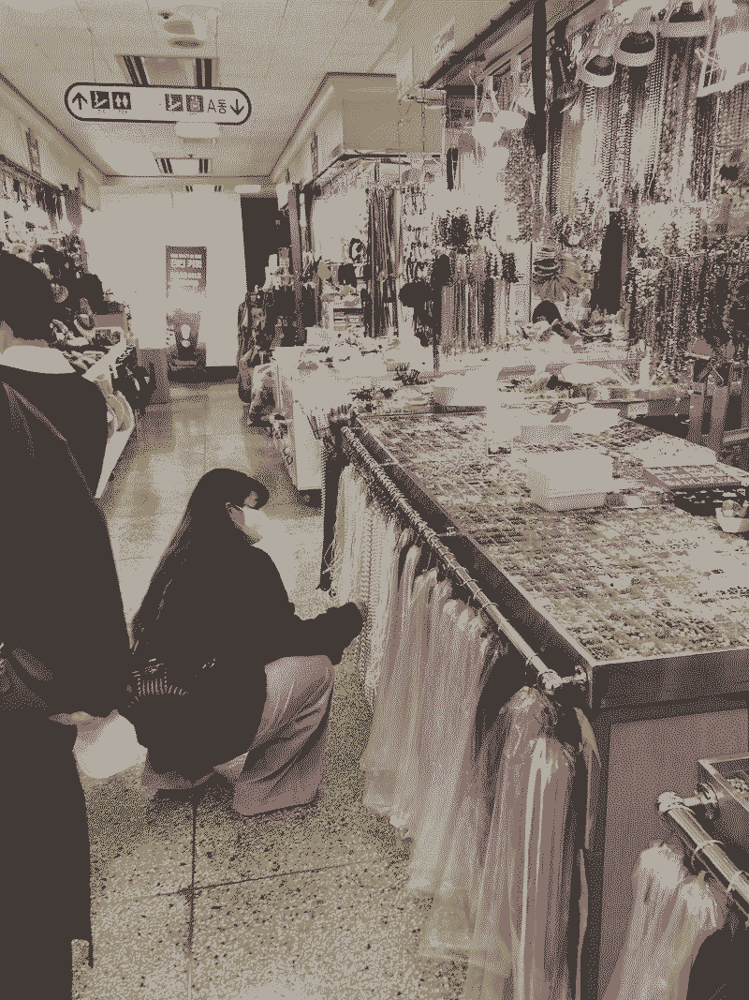
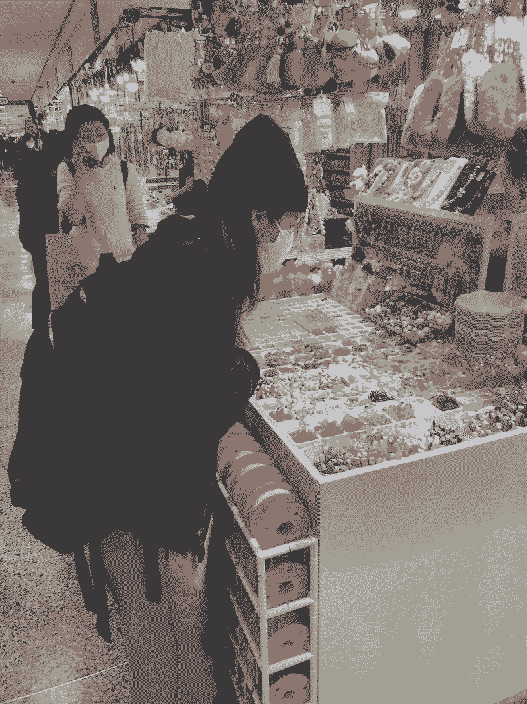

Title
short description
material
<전시명>, 전시도시(국가), 날짜, 연도





Using Arduino and Processing, I created a system where plugging a plug into an outlet triggers a video of the studio lights turning on, with the video skipping through its playback. This was designed to give the illusion that the cable is physically connected and powering the studio in real life. The sensor was implemented by installing a limit switch inside the outlet, which detects when the plug is inserted. When triggered, the system runs a short 8-second video that skips through its playback, making it appear as if the lights in the dark studio turn on and off.